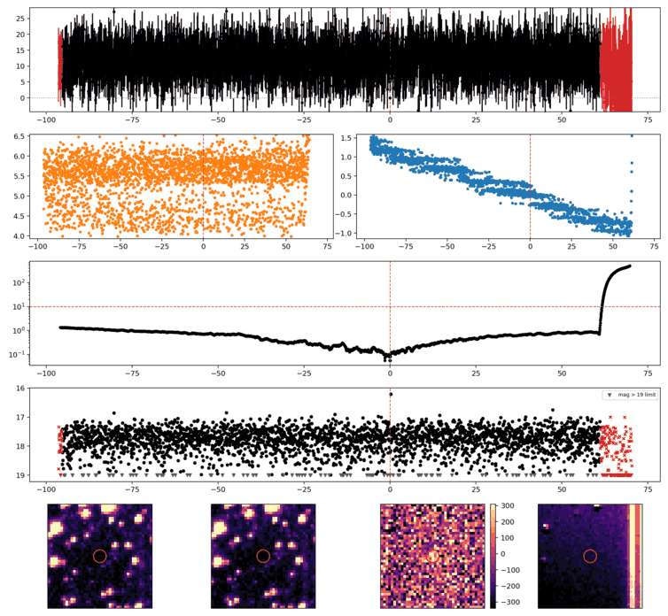
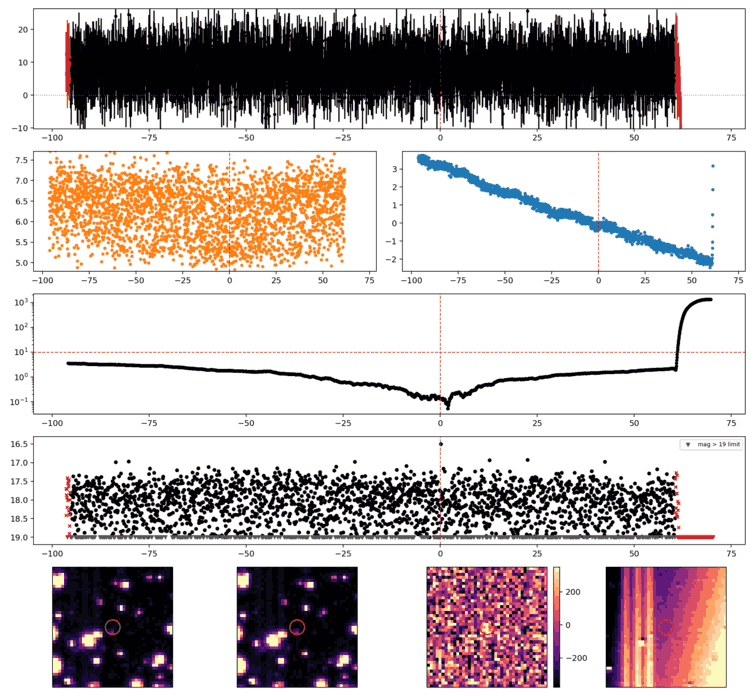

Search centered on refined position (31.9358363, -34.1997983 deg). Gaia coordinates are at J2016.0; proper motions are shown, without epoch propagation. A positional match does not change the candidate flags.
No Gaia DR3 sources found within 5 arcseconds.
Retrieved 2026-10-21T17:22:01.797948+00:00

Search centered on refined position (42.9717252, -28.6673681 deg). Gaia coordinates are at J2016.0; proper motions are shown, without epoch propagation. A positional match does not change the candidate flags.
No Gaia DR3 sources found within 5 arcseconds.
Retrieved 2026-10-21T17:22:02.567806+00:00